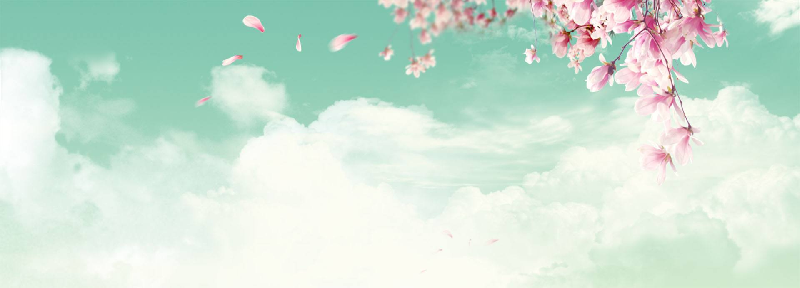

1、为值得的人赴汤蹈火，对闲杂人等别在乎太多。如此，你的善良才显矜贵。
2、纯洁无瑕像雪花，美丽夺目像烟花，满脸喜气像年花，甜美温柔像豆花，勤劳善良像翠花……你既像这花又像那花，所以我应该称你为如花!祝如花似玉新年好!
3、善良和谦虚是永远不应令人厌恶的两种品德。斯蒂文生
4、我没有漂亮的外表，也没有名牌大学的文凭，就是一个有点任性，有点孩子气，有点粘人的小女人，还有一颗真诚善良的心，希望在这个网络平台能找到一个，能够包容我的任性，喜欢我的粘人，能够读懂我的人，40岁以下请勿打扰，
5、善良是善良者的墓志铭;卑鄙是卑鄙者的通行证。
6、阿米尔在父亲病逝，从美国返老家时，突然发现哈桑竟然与他是同父异母的兄弟，他在一时也了解到了父亲的双重性格，善良与错误，在那一时他深知了父亲最深的痛，阿米尔是父亲的阳光环，哈桑是生活在阴隐中的人--私生子。
7、我喜欢文中的外祖母，她似乎有种特殊的亲和力，她有讲不完的故事。而且她是那么爱她的子女。即使是米哈伊尔和雅科夫这两个大坏蛋，她也并没有请求外祖父怎样严厉得处罚他们。一个善良的人，又怎会喜欢在家里发生战争呢?面对外祖父毫无人情的打骂，她也是一忍再忍。
8、人生的空虚不在于人的孤独，在于心的寂寞;人生的智慧不在于善于观察，在于善于辨别;人生的寻找不在于千山万水，在于咫尺之间;人生的境界不在于盲目跟随，在于自我探求。离去，让事情变得简单，人们变得善良，像个孩子一样，我们重新开始。
9、风吹乱我前进的方向，指向你出现的地方。一见钟情的力量，把你记在了我的心上。事实傻傻的想像，能够享受到你的善良。总是徘徊在你的身旁，希望你能发现这个异常。将你带进我的世界飞翔，把所有伤心遗忘，让幸福地久天长!
10、楼主：人的长相到底能有多重要。神回复：三分天注定，七分靠打拼，剩下的九十分全部看长相。
11、恋爱中很多误会让人心碎。他生日加班，你体恤他的辛苦，也许他只是去跟别人庆祝了;他说他从来记不住你的生日和电话号码，你体谅他的散漫，却发现他对于前女友的一切倒背如流。能够造成误会也是因为一方比较善良，不愿意往不好的方向去想，感动了自己，成全了别人，最后伤心的是自己。
12、不是所有的爱恋都能守在身旁，某个人会让你一辈子都不忘;更不是所有的感情都是善良，有时候残忍是另一种成长。
13、好男人经得起诱惑，好女人耐得住寂寞。爱可以简简单单。但不能随随便便。骄傲的女人大都嫁给了卑微的男人，骄傲的男人娶的大都是卑微的女人。世间没有美丽的天使，只有善良的女人。没有不能在一起的两个人，只有靠不拢的两颗心。所以，不要轻易去妥协。有一种单身，叫宁缺毋滥
14、有关于爱】1、爱可以简简单单。但不能随随便便。2、好男人经得起诱惑，好女人耐得住寂寞。3、骄傲的女人大都嫁给了卑微的男人，骄傲的男人娶的大都是卑微的女人。4、世间没有美丽的天使，只有善良的女人。5、没有不能在一起的两个人，只有靠不拢的两颗心。
15、奉献是积极主动的。个人的奉献在于主观愿望的伟大体现。猪在生存之时，一味地索取;而牛在生前是积极地劳作奉献，死后实现同猪一样的贡献。因此，它得到人们更多的称赞，同时也将它喻为勤劳、善良、仁慈的化身。此时，它的贡献已不仅仅是在物质上的奉献，而更重要的是精神的奉献。
16、母爱啊母爱!宇宙间无与伦比的你，哺育着天下子女，让他们在你的呵护下快乐地生活。你真了不起呀，你挥洒吧，挥洒吧，尽情地将你挥洒吧。把你的关爱、温馨、温暖、善良、仁慈洒向广袤无垠的世界吧。
17、爱是忍耐，爱是善良，爱不是妒忌和自吹自擂，也不是粗鲁。
18、我是。最可怕的。恶魔。身为。善良天使。的你。请不要。扮演。我的角色。
19、爱一个人不光看表面长相，更重要的是看内心世界。我爱你就是爱你的温柔善良，爱你的体贴谅解，爱你的关心呵护。爱你是我这辈子最大的的幸福!想着你，是浪漫的甜蜜，思绪朦胧成些许的希冀;念着你，是温馨的旋律，情谊铺垫在心底，如诗如画的爱意，在我的梦幻里，给你幸福我会竭尽全力!
20、有时候语言会显得苍白无力，说的再多也起不了多大作用，解释反而成为别人的借口。干脆不说，在承担中，用行动来证明事实。人生中哪能事事如愿，我们需要的不是表面的应付和虚伪的承诺，关键在于正直善良。用平静的心态面对过程，转变别人的认识，最终得到理解和信任。
21、愿我的弟兄如同以撒，诚实勇敢、信靠顺服，如展翅飞腾的鹰;愿我的姊妹如同利百加，温柔善良、勤劳才德，如多结果子的葡萄树!
22、我可以比好人还善良，也可以比坏人更凶恶，一切源于他人怎样对我
23、希望我的孩子做一个善良的人，健康，比较正，带一个正的价值观，然后慢慢长大以后，寻找或培养自己的一种生存能力，无论做什么，只要自己能养活自己就可以，完事了。
24、宝贝，在你的面前是一片广阔的大海，你的善良勇敢是船，决心坚持是帆，希望你每天都健康快乐的出发!爸爸妈妈永远爱你!
25、心软，是一种不公平的善良，成全了别人，委屈了自己，却还被当成傻子。
13、好男人经得起诱惑，好女人耐得住寂寞。爱可以简简单单。但不能随随便便。骄傲的女人大都嫁给了卑微的男人，骄傲的男人娶的大都是卑微的女人。世间没有美丽的天使，只有善良的女人。没有不能在一起的两个人，只有靠不拢的两颗心。所以，不要轻易去妥协。有一种单身，叫宁缺毋滥
14、有关于爱】1、爱可以简简单单。但不能随随便便。2、好男人经得起诱惑，好女人耐得住寂寞。3、骄傲的女人大都嫁给了卑微的男人，骄傲的男人娶的大都是卑微的女人。4、世间没有美丽的天使，只有善良的女人。5、没有不能在一起的两个人，只有靠不拢的两颗心。
15、奉献是积极主动的。个人的奉献在于主观愿望的伟大体现。猪在生存之时，一味地索取;而牛在生前是积极地劳作奉献，死后实现同猪一样的贡献。因此，它得到人们更多的称赞，同时也将它喻为勤劳、善良、仁慈的化身。此时，它的贡献已不仅仅是在物质上的奉献，而更重要的是精神的奉献。
16、母爱啊母爱!宇宙间无与伦比的你，哺育着天下子女，让他们在你的呵护下快乐地生活。你真了不起呀，你挥洒吧，挥洒吧，尽情地将你挥洒吧。把你的关爱、温馨、温暖、善良、仁慈洒向广袤无垠的世界吧。
17、爱是忍耐，爱是善良，爱不是妒忌和自吹自擂，也不是粗鲁。
18、我是。最可怕的。恶魔。身为。善良天使。的你。请不要。扮演。我的角色。
19、爱一个人不光看表面长相，更重要的是看内心世界。我爱你就是爱你的温柔善良，爱你的体贴谅解，爱你的关心呵护。爱你是我这辈子最大的的幸福!想着你，是浪漫的甜蜜，思绪朦胧成些许的希冀;念着你，是温馨的旋律，情谊铺垫在心底，如诗如画的爱意，在我的梦幻里，给你幸福我会竭尽全力!
20、有时候语言会显得苍白无力，说的再多也起不了多大作用，解释反而成为别人的借口。干脆不说，在承担中，用行动来证明事实。人生中哪能事事如愿，我们需要的不是表面的应付和虚伪的承诺，关键在于正直善良。用平静的心态面对过程，转变别人的认识，最终得到理解和信任。
21、愿我的弟兄如同以撒，诚实勇敢、信靠顺服，如展翅飞腾的鹰;愿我的姊妹如同利百加，温柔善良、勤劳才德，如多结果子的葡萄树!
22、我可以比好人还善良，也可以比坏人更凶恶，一切源于他人怎样对我
23、希望我的孩子做一个善良的人，健康，比较正，带一个正的价值观，然后慢慢长大以后，寻找或培养自己的一种生存能力，无论做什么，只要自己能养活自己就可以，完事了。
24、宝贝，在你的面前是一片广阔的大海，你的善良勇敢是船，决心坚持是帆，希望你每天都健康快乐的出发!爸爸妈妈永远爱你!
25、心软，是一种不公平的善良，成全了别人，委屈了自己，却还被当成傻子。